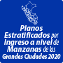
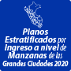

Sistemas GIS de consulta del INEI
 



SERVICIOS WMS & SERVICIOS WFS
El servicio Web Map Service (WMS) o Servicio de publicación de mapas es un estándar propuesto por la OGC que ofrece una sencilla interfaz HTTP, el cual permite realizar una solicitud de imágenes de mapas georreferenciados de una o más bases de datos geográficas que pueden estar distribuidas en más de un servidor

tabla

CATÁLOGO DE METADATOS
Los metadatos de la información georreferenciada constituyen elementos centrales en la Infraestructuras de Datos Espaciales del Perú, pues solo a través de estos es posible conocer las características de los datos existentes.
NORMAS TÉCNICAS
La norma técnica (NT) es un documento que contiene definiciones, requisitos, especificaciones de calidad, terminología, métodos de ensayo o información de rotulado. La elaboración de una NT está basada en resultados de la experiencia, la ciencia y del desarrollo tecnológico, de tal manera que se pueda estandarizar procesos, servicios y productos.
El servicio Web Map Service (WMS) o Servicio de publicación de mapas es un estándar propuesto por la OGC que ofrece una sencilla interfaz HTTP, el cual permite realizar una solicitud de imágenes de mapas georreferenciados de una o más bases de datos geográficas que pueden estar distribuidas en más de un servidor
DESCARGA DE CAPAS CARTOGRÁFICAS
Es posible descargar la información geográfica vectorial completa, su geometría y tabla de atributos asociada. Podrá encontrar una lista de capas que permiten la descarga o extracción de datos en formatos Geo Package “GPKG” .
| CATEGORÍA | NOMBRE |
| Límites | Departamental (CPV 2017) |
| Provincial (CPV 2017) | |
| Distrital (CPV 2017) |
GEODATOS PERÚ
El poblamiento de capas se encuentra en constante actualización, por lo cual toda la información territorial podría contener diferencias o inconsistencias en relación al objeto o fenómeno que se está representando. Ante cualquier duda, el usuario puede verificar su exactitud y vigencia solicitando el detalle correspondiente.